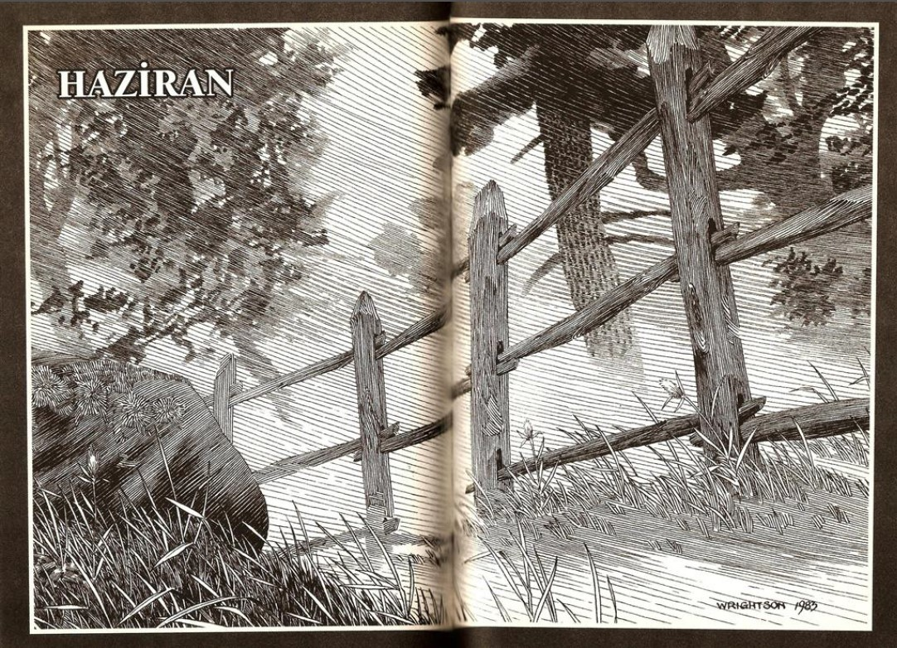
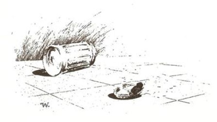
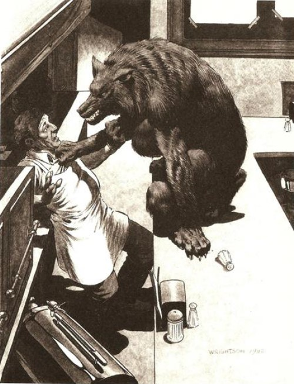

YILIN EN KISA gecesinde, Tarker's Mills'in tek kafesi, Konuş ve Çiğne'yi işleten, beyaz gömleğinin kollarını kaslı ve dövmeli kollarını ortaya çıkararak dirseklerine kadar sıvamış olan Alfie Knopfler, uzun Formika tezgâhı pırıl pırıl olana dek siliyordu. Kafe o an için tamamen boştu ve adam tezgâhın işini bitirmesinin ardından kısa bir süre durup dışarıya, caddeye baktı, tıpkı bunun gibi güzel kokulu, yeni başlayan bir yaz gecesinde bekâretini kaybedişini düşünüyordu - kız Arlene McCune'du, ki sonradan Bangor'un en başarılı genç avukatlarından biriyle evlenmiş ve ismi artık Arlene Bessey olmuştu. Tanrım, arabasının arka koltuğunda nasıl da kıpır kıpırdı, gece nasıl da güzel kokuyordu!
Kapı yaza doğru açılıyor ve ışıltılı bir ay ışığı dalgasının içeriye akmasına izin veriyordu. Adam, kafenin boş oluşunu insanların Canavarın dolunay zamanı etrafta dolaştığına inanmasına bağlıyordu, ama kendisi ne korkuyor ne de endişeleniyordu; korkmuyordu, çünkü yüz kiloyu aşkın bir gövdesi vardı ve bu yüz kilonun büyük bölümünü hâlâ o sıkı ve güçlü Donanma kasları oluşturuyordu, endişelenmiyordu, çünkü yarın sabah erkenden müdavimler, yumurta, kızartma ve kahve için orada olacaklardı. Belki de, diye düşündü, bu akşam biraz erken kapatırım - kahve makinesini kapatır, etrafı toplarım, Basket Market'ten altılı biramı alır ve açık hava sinemasında oynayan ikinci filme yetişirim. Haziran, Haziran, dolunay - arabada film izleyip birkaç bira içmek için iyi bir gece. Geçmişin zaferlerini hatırlamak için iyi bir gece.
Tam kahve makinesine yönelirken kapı açıldı ve memnuniyet içinde kapıya doğru döndü.
"Hey! Nasıl gidiyor?" diye sordu, çünkü gelen müdavimlerden biriydi... bu müşterisini sabah saat ondan sonra çok nadiren görse bile.
Müşteri kafasını salladı, dostane bir tavırla biraz lafladılar.
"Kahve?" diye sordu Alfie, müşterisi kırmızı yastıklı bar taburelerinden birine yerleşirken.
"Lütfen."
Güzel, ikinci filmi yakalamak için hâlâ vakit var, diye düşündü Alfie yüzünü kahve makinesine dönerken. Pek iyi görünmüyordu. Yorgun, belki de hastaydı. Ama hâlâ yeterince vakit -
Şok dalgaları, düşüncesinin geri kalanını silip süpürmekteydi. Alfie şaşkınlıktan ağzı açık, aptalca bakakalmıştı. Kahve makinesi de Konuş ve Çiğne'deki diğer her şey gibi lekesizdi. Paslanmaz çelikten yapılmış silindir, metal bir ayna gibi pırıl pırıl parlıyordu ve Alfie, onun pürüzsüzce dışarıya doğru bükülen yüzeyinde, iğrenç olduğu kadar inanılmaz bir şey görüyordu. Müşterisi, her gün gördüğü biriydi, Tarker's Mills'deki herkesin her gün gördüğü biri ve değişiyordu. Müşterisinin yüzü bir şekilde eriyip kalınlaşıyor ve genişliyordu. Pamuklu gömleği gerildi, gerildi... aniden gömleğin dikişleri ayrılmaya başladı ve saçma bir şekilde Alfie Knopfler'in o anda düşünebildiği tek şey küçük yeğeni Ray'in seyretmekten hoşlandığı İnanılmaz Dev Hulk isimli çizgi filmdi.
Müşterisinin rahat ve pek dikkat çekici olmayan yüzü hayvani bir şeye dönüşüyordu. Yumuşak kahverengi gözleri aydınlanmış, korkunç bir sarı yeşil renge dönmüştü. Müşterisi bir çığlık attı. . . ama çığlık kırılıp dağılıyor, bir asansör gibi ses perdelerinin arasından birer birer inerek öfke dolu bir kükreme halini alıyordu.
O - şey, Canavar, kurtadam ya da her neyse - pürüzsüz Formika'yı elleriyle yokluyor ve bir şekerliği deviriyordu. Yuvarlanırken etrafa şekerler saçan kalın, cam silindiri özel menü listesinin bulunduğu duvara doğru şiddetle fırlattı, hâlâ kükrüyordu.
Alfie olduğu yerde döndü ve kalçasıyla kahve makinesini devirdi. Makine, bam diye yere çarptı ve sıcak kahve adamın ayak bileklerini yakarak her yere saçıldı. Acı ve korku içinde haykırdı. Evet, şimdi korkuyordu, yüz kiloluk güçlü Donanma kaslarını unutmuştu, yeğeni Ray'i unutmuştu, arka koltukta Arlene McCune ile çiftleşmesini bile unutmuştu, artık sadece Canavar vardı, bir açık hava sineması perdesinden fırlamış bir korku filmi canavarı gibi tam önündeydi.
Pantolonu ve gömleği paramparça olan Canavar, korkunç kaslarıyla tezgâhın üzerine rahatça atladı. Alfie, onun ceplerindeki anahtarların, bozuklukların şıngırdayışını duyabiliyordu.
Alfie'nin üzerine sıçradı, Alfie yana kaçmaya çalıştı ama kahve makinesine takılıp kırmızı linol zeminin üzerine sereserpe düştü. Yeni bir parçalanan kükreme yükseldi, sıcak, sarı bir nefes seli aktı ve ardından yaratığın çenesi, adamın sırtındaki üçgen kaslarına dalıp ürkütücü bir güçle onları yırtarak kopardığında Alfie'nin duyduğu büyük, kırmızı acı yükseldi. Kan zemine fışkırıyordu, tezgâha, ızgaraya.
Alfie sırtında kocaman, paramparça ve fışkıran bir delikle ayağa kalktı, sendeliyordu; bağırmaya çalıştı, beyaz ay ışığı, yaz ayı ışığı, pencerelerden içeriye akıp gözlerini kamaştırıyordu.
Canavar, adamın üzerine doğru bir kez daha sıçradı.
Ay ışığı, Alfie'nin gördüğü son şeydi.

